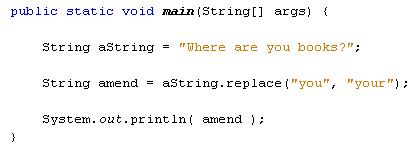

The replace method in Java is used to replace all occurrence of a character/s in a particular string. Take this sentence:
"Where are you books?"
We want to replace "you" with "your". Here's the code:

There are several ways to use the replace method, and they differ in what you put between the round brackets of the method. We're replacing one sequence of characters with another. Think of the comma separating the two as the word "with". You'd then have "Replace you with your".
You can also replace single character:
aString.replace( '£', '@' )
The above code reads "Replace £ with @".
(You can also use something called a regular expression in your replace methods,
but that is outside the scope of this book.)
You can trim white space from your strings White space is things like space characters, tabs, and newline characters - the characters you can't see, in other words. The trim method is easy to use:
String amend = " white space ";
amend = amend.trim( );
So the trim method goes after the string you want to amend. The blank characters before the word "white" and after "space" in the code above will then be deleted.
If you're getting input from a user then it's always a good idea to use trim on the inputted strings.
OK, we'll leave string manipulation there and move on. Next up - formatted strings of text.